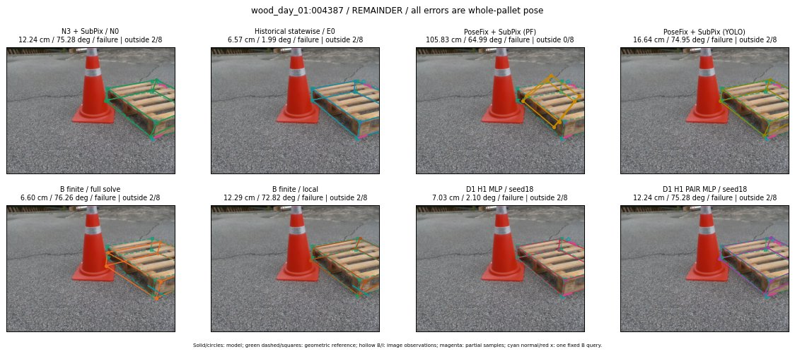

Whole-pallet pose errors; reference is a fixed geometric annotation, not certified physical GT.

Scores are uncalibrated logits. N0 retention is a numerical pose alias; it differs from H0 none or B fallback. B/I and profiles in baseline/B panels are original observations; L panels use new D1 observations. Only one deterministic supported B query is shown in a thumbnail; full support counts are below. Grey privacy rectangles edit the display copy only and are unrelated to O states; all observations were measured on original pixels. Thumbnails use JPEG quality85; detailed scientific panels are PNG.
| Method | Whole pose / cm, deg | Actual source | Selected ID | Score | Archived candidates | Eligible | N0 retained | H0 none | Fallback | Finite profiles |
|---|---|---|---|---|---|---|---|---|---|---|
| Raw YOLO + F | 10.58 cm / 75.37 deg / failure | OTHER | None | N/A | N/A | N/A | False | N/A | None | N/A |
| N3 + SubPix / N0 | 12.24 cm / 75.28 deg / failure | N0 | None | N/A | N/A | N/A | True | N/A | None | N/A |
| Historical statewise / E0 | 6.57 cm / 1.99 deg / failure | E0_REGENERATED | None | N/A | N/A | N/A | False | N/A | False | N/A |
| PoseFix raw | 99.78 cm / 64.29 deg / failure | OTHER | None | N/A | N/A | N/A | False | N/A | None | N/A |
| PoseFix + SubPix (PF) | 105.83 cm / 64.99 deg / failure | OTHER | None | N/A | N/A | N/A | False | N/A | False | historical support records 9; finite audit N/A |
| PoseFix + SubPix (YOLO) | 16.64 cm / 74.95 deg / failure | OTHER | None | N/A | N/A | N/A | False | N/A | False | historical support records 9; finite audit N/A |
| Historical L, seed18 | 12.24 cm / 75.28 deg / failure | N0 | N0 | N/A | 102 | 102 | True | True | True | N/A |
| Historical B fixed bank | 17.44 cm / 9.89 deg / failure | OTHER | G10/SWAPPED_WD/sample/3 | N/A | N/A | N/A | False | N/A | False | N/A |
| Historical B full | 38.99 cm / 126.17 deg / failure | OTHER | NEW/B/SWAPPED_WD/h3/G10/ORIGINAL_WD/sample/25/PROPOSED_NATIVE_YAW_3 | N/A | N/A | N/A | False | N/A | False | N/A |
| Historical edge full | 110.52 cm / 56.72 deg / failure | OTHER | NEW/edge/SWAPPED_WD/h3/G10/ORIGINAL_WD/sample/25/PROPOSED_NATIVE_YAW_3 | N/A | N/A | N/A | False | N/A | False | N/A |
| Historical AB full | 24.24 cm / 44.12 deg / failure | OTHER | NEW/AB/ORIGINAL_WD/h0/G13/ORIGINAL_WD/sample/0/PROPOSED_NATIVE_YAW_0 | N/A | N/A | N/A | False | N/A | False | N/A |
| B finite / fixed bank | 17.44 cm / 9.89 deg / failure | OTHER | G10/SWAPPED_WD/sample/3 | N/A | N/A | N/A | False | N/A | False | 6/6 |
| B finite / full solve | 6.60 cm / 76.26 deg / failure | OTHER | NEW_FINITE/B/ORIGINAL_WD/h0/G13/ORIGINAL_WD/sample/0/PROPOSED_NATIVE_YAW_0 | N/A | N/A | N/A | False | N/A | False | 6/6 |
| B finite / local | 12.29 cm / 72.82 deg / failure | OTHER | NEW_FINITE/B/ORIGINAL_WD/h0/N0_LOCAL_SAME_PHYSICAL_POSE/ORIGINAL_WD | N/A | N/A | N/A | False | N/A | False | 6/6 |
| Edge finite / full solve | 20.09 cm / 69.31 deg / failure | OTHER | NEW_FINITE/edge/ORIGINAL_WD/h0/G13/ORIGINAL_WD/sample/0/PROPOSED_NATIVE_YAW_0 | N/A | N/A | N/A | False | N/A | False | 6/6 |
| D0 H0 MLP / seed18 | 12.24 cm / 75.28 deg / failure | N0 | N0 | 1.4137532711029053 | 77 | 77 | True | True | True | N/A |
| D0 H0 MLP / seed19 | 12.24 cm / 75.28 deg / failure | N0 | N0 | 2.1251580715179443 | 77 | 77 | True | True | True | N/A |
| D0 H0 MLP / seed20 | 12.24 cm / 75.28 deg / failure | N0 | N0 | -1.91866135597229 | 77 | 77 | True | True | True | N/A |
| D0 H1 MLP / seed18 | 7.03 cm / 2.10 deg / failure | OTHER | G10/SWAPPED_WD/endpoint/99 | -2.8472633361816406 | 77 | 77 | False | False | False | N/A |
| D0 H1 MLP / seed19 | 7.03 cm / 2.10 deg / failure | OTHER | G10/SWAPPED_WD/endpoint/99 | -2.8664257526397705 | 77 | 77 | False | False | False | N/A |
| D0 H1 MLP / seed20 | 7.03 cm / 2.10 deg / failure | OTHER | G10/SWAPPED_WD/endpoint/99 | -3.828996181488037 | 77 | 77 | False | False | False | N/A |
| D1 H0 MLP / seed18 | 12.24 cm / 75.28 deg / failure | N0 | N0 | 7.416159152984619 | 77 | 77 | True | True | True | N/A |
| D1 H0 MLP / seed19 | 12.24 cm / 75.28 deg / failure | N0 | N0 | 6.355585098266602 | 77 | 77 | True | True | True | N/A |
| D1 H0 MLP / seed20 | 12.24 cm / 75.28 deg / failure | N0 | N0 | 6.228047847747803 | 77 | 77 | True | True | True | N/A |
| D1 H1 MLP / seed18 | 7.03 cm / 2.10 deg / failure | OTHER | G10/SWAPPED_WD/endpoint/99 | -3.000431537628174 | 77 | 77 | False | False | False | N/A |
| D1 H1 MLP / seed19 | 7.03 cm / 2.10 deg / failure | OTHER | G10/SWAPPED_WD/endpoint/99 | -2.9353833198547363 | 77 | 77 | False | False | False | N/A |
| D1 H1 MLP / seed20 | 7.03 cm / 2.10 deg / failure | OTHER | G10/SWAPPED_WD/endpoint/99 | -3.9031193256378174 | 77 | 77 | False | False | False | N/A |
| D1 H1 ROLE AFFINE / seed18 | 12.24 cm / 75.28 deg / failure | N0 | N0 | -0.6110095381736755 | 77 | 77 | True | False | False | N/A |
| D1 H1 ROLE AFFINE / seed19 | 12.24 cm / 75.28 deg / failure | N0 | N0 | -0.1419225037097931 | 77 | 77 | True | False | False | N/A |
| D1 H1 ROLE AFFINE / seed20 | 12.24 cm / 75.28 deg / failure | N0 | N0 | -0.30376842617988586 | 77 | 77 | True | False | False | N/A |
| D1 H1 PAIR MLP / seed18 | 12.24 cm / 75.28 deg / failure | N0 | N0 | -2.0157687664031982 | 77 | 2 | True | False | False | N/A |
| D1 H1 PAIR MLP / seed19 | 12.24 cm / 75.28 deg / failure | N0 | N0 | -1.8011178970336914 | 77 | 2 | True | False | False | N/A |
| D1 H1 PAIR MLP / seed20 | 12.24 cm / 75.28 deg / failure | N0 | N0 | -2.0575196743011475 | 77 | 2 | True | False | False | N/A |
| D1 H1 PAIR ROLE AFFINE / seed18 | 12.24 cm / 75.28 deg / failure | N0 | N0 | -0.7855833768844604 | 77 | 2 | True | False | False | N/A |
| D1 H1 PAIR ROLE AFFINE / seed19 | 12.24 cm / 75.28 deg / failure | N0 | N0 | -1.134265661239624 | 77 | 2 | True | False | False | N/A |
| D1 H1 PAIR ROLE AFFINE / seed20 | 12.24 cm / 75.28 deg / failure | N0 | N0 | -0.8187972903251648 | 77 | 2 | True | False | False | N/A |
| Regenerated common E0 | 6.57 cm / 1.99 deg / failure | E0_REGENERATED | E0_REGENERATED | N/A | N/A | N/A | False | N/A | False | N/A |